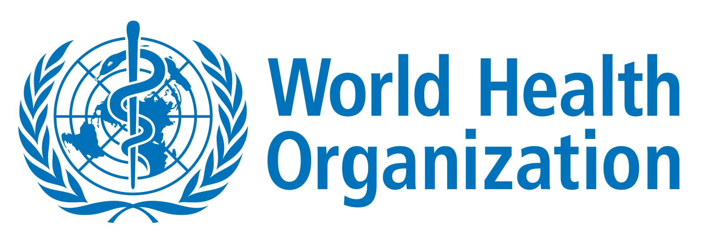

Organização Internacional dos Telégrafos (OIT) e União Postal Universal (UPU)
OIT (1865):
Criada em Paris, regulava os sistemas telegráficos entre países
europeus para facilitar a comunicação internacional. Mais tarde, foi integrada
na União Internacional das Telecomunicações.
UPU (1874):
Criada na Suíça, padronizou o envio de correio internacional,
simplificando as comunicações globais. Em 1948, tornou-se uma agência da ONU.
Cruz Vermelha Internacional
Fundação (1863): Criada por Henry Dunant, após testemunhar os horrores da guerra,
para prestar ajuda aos feridos.
Convenções de Genebra: O primeiro tratado em 1864 protegeu feridos de guerra e
trabalhadores humanitários, tornando-se essencial no direito humanitário.
Liga das Nações
Origem (1919): Criada após a Primeira Guerra Mundial pelo Tratado de Versalhes para prevenir
futuros conflitos. Contudo, falhou em evitar a Segunda Guerra Mundial e foi dissolvida em 1946.
Organização das Nações Unidas (ONU)
Fundação (1945): Criada pós-Segunda Guerra Mundial, para substituir a Liga das Nações.
Tem como objetivo promover a paz, segurança e direitos humanos através de órgãos como o Conselho
de Segurança e a Assembleia Geral.
Organização Internacional do Trabalho (OIT)
Fundação (1919): Também estabelecida pelo Tratado de Versalhes,
visa garantir condições de trabalho justas. Em 1946, tornou-se a
primeira agência especializada da ONU.
Organização Mundial da Saúde (OMS)
Fundação (1948): Agência da ONU para coordenar a saúde global,
combate a pandemias e promove o acesso a cuidados básicos de saúde
em todo o mundo.

|